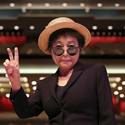

 Yoko Ono, was born into an aristocratic family on February 18, 1933, Tokyo Japan. Yoko Ono is a multimedia and performer artist who became known worldwide in the 1960s. She is a Japanese artist and musician who was an influential practitioner of conceptual and performance art in the 1960s. She became internationally famous as the wife and artistic partner of musician John Lennon (from the Beatles) which later came to be known as Yoko Ono Lennon. Ono grew up mostly in Tokyo, where she attended a Peers school. As a child, she wrote poetry and plays and received classical training in piano and voice. Before she became John Lennon wife, she was married in 1956 to Ichiyanagi Toshi, a Japanese composition student through whom she began to forge a connection to the New York City avant-garde art world. When she began making films in the 1960’s, she was already established artist playing an active role in the world of music, most well-known by her “primal scream” or high pitched wails. In the mid 1960’s she began to write mini film scripts. She contributed three films to the Fluxfilm Program in 1966. Two of the films, Eyeblink and Match, are one shot films shot at 2000 frames per second. She also included No. 4, or Bottoms in her contribution. Ono presented simple conceptual art pieces that imaginatively encouraged, and often required, interactive participation. One of her famous works was the “cut piece” staged in 1964, when members of the audience were invited to cut off pieces of her clothing until she was naked, an abstract commentary on discarding materialism. The difficulty with understanding Ono’s art was that its impact came largely from her ideas; putting new contextual frames around everyday objects, or asking her audience to complete an experience with their own imaginations. For example, most of Ono’s pieces were white, so that the audience could imagine their own colors (or, in the case of her all-white chess set Play it by Trust, to create ambiguity; even her so-called Blue Room was all-white (viewers were supposed to stay in the room until it turned blue). Her marriage to Lennon brought her instant celebrity. Yoko and John used their bed-ins in Amerstdam and Montreal, an hotel bedroom opened to the press in an effort to promote world peace, allowed Ono to express herself. She embarked on a music career with Yoko Ono/Plastic Ono Band, a collection of mostly improvisational rock songs to which she contributed ululating vocals influenced by Kabuki and the operas of Austrian composer Alban Berg. After the death of Lennon, she continued her career, recording albums, performing concert tours and composing off-Broadway musicals. She has exhibited her art internationally, and the first U.S. retrospective of her work opened in New York City in 2002.